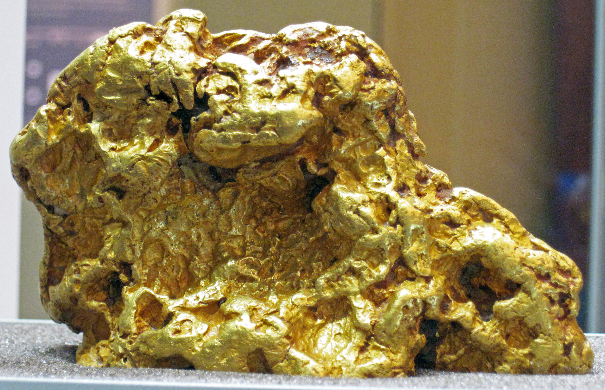

Drago News: The Only News You'll Ever Need
The Hunt for the Abandoned Gold Mine
The Kensington mine is an underground gold operation located on the east side of the Lynn Canal, approximately 45 miles north-northwest of Juneau, Alaska. The mine consists of the (i) Kensington Main deposit, (ii) Raven deposit, (iii) Jualin deposit, and (iv) other nearby deposits and exploration targets.
Click me